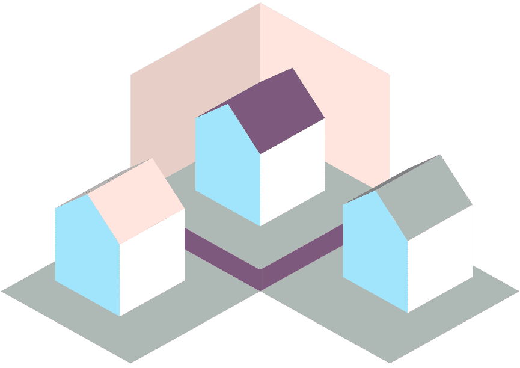

<header class="py-3 cabecera">
  <div class="container-fluid">
    <a class="navbar-brand" [routerLink]="['/inicio']">
      
      <span class="titulo-cabecera">TLA<span class="nombre-servicio"> - Servicio de teleasistencia</span></span>
    </a>
    <div class="col-md-3 text-end login">
      <button type="button" class="btn btn-outline-secondary me-2">Login</button>
    </div>
  </div>
</header>
<nav class="navbar navbar-light bg-light">
  <div class="container d-flex flex-wrap">
    <ul class="nav me-auto">
      <li class="nav-item dropdown">
        <a class="nav-link dropdown-toggle" href="#" id="navbarDropdownUsers" role="button"
           data-bs-toggle="dropdown" aria-expanded="false">
          Usuarios
        </a>
        <ul class="dropdown-menu" aria-labelledby="navbarDropdown">
          <li><a class="dropdown-item" [routerLink]="['/usuarios']">Consultar usuarios</a></li>
          <li><a class="dropdown-item" [routerLink]="['/usuarios/nuevo']">Crear nuevos usuarios</a></li>
        </ul>
      </li>

      <li class="nav-item dropdown">
        <a class="nav-link dropdown-toggle" href="#" id="navbarDropdownAlarmas" role="button"
           data-bs-toggle="dropdown" aria-expanded="false">
          Alarmas
        </a>
        <ul class="dropdown-menu" aria-labelledby="navbarDropdown">
          <li><a class="dropdown-item" [routerLink]="['/tipos_alarmas']">Consultar tipos de alarma</a></li>
          <li><a class="dropdown-item" [routerLink]="['/tipos_alarmas/nuevo']">Crear nuevo tipo de alarma</a></li>
          <li>
            <hr class="dropdown-divider">
          </li>
          <li><a class="dropdown-item" [routerLink]="['/clasificaciones_alarmas']">Consultar clasificaciones de alarma</a>
          </li>
          <li><a class="dropdown-item" [routerLink]="['/clasificaciones_alarmas/nueva']">Crear nueva clasificación de
            alarma</a></li>
        </ul>
      </li>

      <li class="nav-item dropdown">
        <a class="nav-link dropdown-toggle" href="#" id="navbarDropdownCentrosSanitarios" role="button"
           data-bs-toggle="dropdown" aria-expanded="false">
          Centros sanitarios
        </a>
        <ul class="dropdown-menu" aria-labelledby="navbarDropdown">
          <li><a class="dropdown-item" [routerLink]="['/centros_sanitarios']">Consultar centros sanitarios</a></li>
          <li><a class="dropdown-item" [routerLink]="['/centros_sanitarios/nuevo']">Crear nuevo centro sanitario</a></li>
          <li>
            <hr class="dropdown-divider">
          </li>
          <li><a class="dropdown-item" [routerLink]="['/tipos_centros_sanitarios']">Consultar tipos de centros sanitarios</a>
          </li>
          <li><a class="dropdown-item" [routerLink]="['/tipos_centros_sanitarios/nuevo']">Crear nuevo tipo de centro
            sanitario</a></li>
        </ul>
      </li>

      <li class="nav-item dropdown">
        <a class="nav-link dropdown-toggle" href="#" id="navbarDropdownModalidadPaciente" role="button"
           data-bs-toggle="dropdown" aria-expanded="false">
          Modalidad paciente
        </a>
        <ul class="dropdown-menu" aria-labelledby="navbarDropdown">
          <li><a class="dropdown-item" [routerLink]="['/tipos_modalidades_pacientes']">Consultar tipos de modalidades de
            pacientes</a></li>
          <li><a class="dropdown-item" [routerLink]="['/tipos_modalidades_pacientes/nuevo']">Crear nuevo tipo de modalidad de
            paciente</a></li>
        </ul>
      </li>

      <li class="nav-item dropdown">
        <a class="nav-link dropdown-toggle" href="#" id="navbarDropdownRecursosComunitarios" role="button"
           data-bs-toggle="dropdown" aria-expanded="false">
          Recursos comunitarios
        </a>
        <ul class="dropdown-menu" aria-labelledby="navbarDropdown">
          <li><a class="dropdown-item" [routerLink]="['/recursos_comunitarios']">Consultar recursos comunitarios</a></li>
          <li><a class="dropdown-item" [routerLink]="['/recursos_comunitarios/nuevo']">Crear nuevo recurso comunirario</a></li>
          <li>
            <hr class="dropdown-divider">
          </li>
          <li><a class="dropdown-item" [routerLink]="['/tipos_recursos_comunitarios']">Consultar tipos de recursos
            comunitarios</a></li>
          <li><a class="dropdown-item" [routerLink]="['/tipos_recursos_comunitarios/nuevo']">Crear nuevo tipo de recurso
            comunitario</a></li>
        </ul>
      </li>

      <li class="nav-item dropdown">
        <a class="nav-link dropdown-toggle" href="#" id="navbarDropdownPersonas" role="button"
           data-bs-toggle="dropdown" aria-expanded="false">
          Personas
        </a>
        <ul class="dropdown-menu" aria-labelledby="navbarDropdown">
          <li><a class="dropdown-item" [routerLink]="['/personas']">Consultar personas</a></li>
          <li><a class="dropdown-item" [routerLink]="['/personas/nueva']">Crear nueva persona seleccionando dirección</a></li>
        </ul>
      </li>

      <li class="nav-item dropdown">
        <a class="nav-link dropdown-toggle" href="#" id="navbarDropdownDirecciones" role="button"
           data-bs-toggle="dropdown" aria-expanded="false">
          Direcciones
        </a>
        <ul class="dropdown-menu" aria-labelledby="navbarDropdown">
          <li><a class="dropdown-item" [routerLink]="['/direcciones']">Consultar direcciones</a></li>
          <li><a class="dropdown-item" [routerLink]="['/direcciones/nueva']">Crear nueva dirección</a></li>
        </ul>
      </li>
    </ul>

  </div>
</nav>


  <router-outlet></router-outlet>


<div class="container">
  <footer class="d-flex flex-wrap justify-content-between align-items-center py-3 my-4">
    <div class="col-md-8 d-flex align-items-center">
      <a [routerLink]="['/inicio']" class="mb-3 me-2 mb-md-0 text-muted text-decoration-none lh-1">
        </a>
      <span
        class="text-muted">&copy; Lucía González Martín - Proyecto Fin de Ciclo Desarrollo de Aplicaciones Web</span>
    </div>
    <ul class="nav col-md-4 justify-content-end list-unstyled d-flex">
      <li class="ms-3"><a class="text-muted"
                          href="mailto:lgonzalezm59@informatica.iesvalledeljerteplasencia.es?Subject=Proyecto%20de%20teleasistencia"><i
        class="fab fa-google-plus"></i></a></li>
      <li class="ms-3"><a class="text-muted" href="https://github.com/lgonzalezm59" target="_blank"><i
        class="fab fa-github"></i></a></li>
    </ul>
  </footer>
</div>


